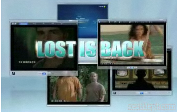
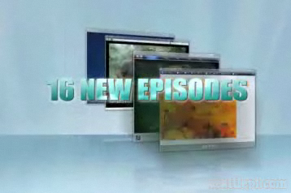

Vista's Oversight in Capabilities
- Windows Vista, Microsoft's 2007 operating system promised a lot more than it could offer.
- Window's first commercial (located at http://gizmodo.com/gadgets/software/microsoft-bores-us-with-first-vista-commercial-218576.php) promises that Vista will be a "significant new business opportunity".
- claims that Vista will be more secure
- more reliable
- and more "potential to fuel your business" (which, frankly, sounds like marketing bus with no real reason to me)
- The commercial also claims Vista will be more mobile, which we all know is a lie after hearing reports about it's effect on the battery life of laptops/netbooks
- The commercial goes out of it's way THREE TIMES to say that Vista will be more secure -- trying to compensate for something, Microsoft?
- Microsoft's other television ad campaign (located at http://chris.pirillo.com/windows-vista-tv-commercials/) is way too obscure and doesn't actually convey anything about Vista.
- The target audience for Vista are generally people who don't need commercials about a new Windows
- The commercial claims that Vista will be more "clutter free", but the people they're advertising at probably don't know what clutter is, let alone that it has something to do with Vista
- The commercial hints at an obscure website, which in turn brings you to another obscure website, which in turn brings you to a website called clutterfree.org -- all the while not really explaining that it's Vista advertisement.
- As one writer put it: "even the PC in Apple's "Mac vs PC" ads conveyed what Windows does more efficiently than this ad campaign"
- The last ad campaign was a small one on the television show Lost
- Shows footage from Lost in a Windows Media Player Window -- apparently showing off the 'Flip3d' feature of WMP in Vista
- not really a good advertisement, it's hard to tell that it's actually a feature of Vista and not a video editing effect
- Not obvious enough for anyone to remember

